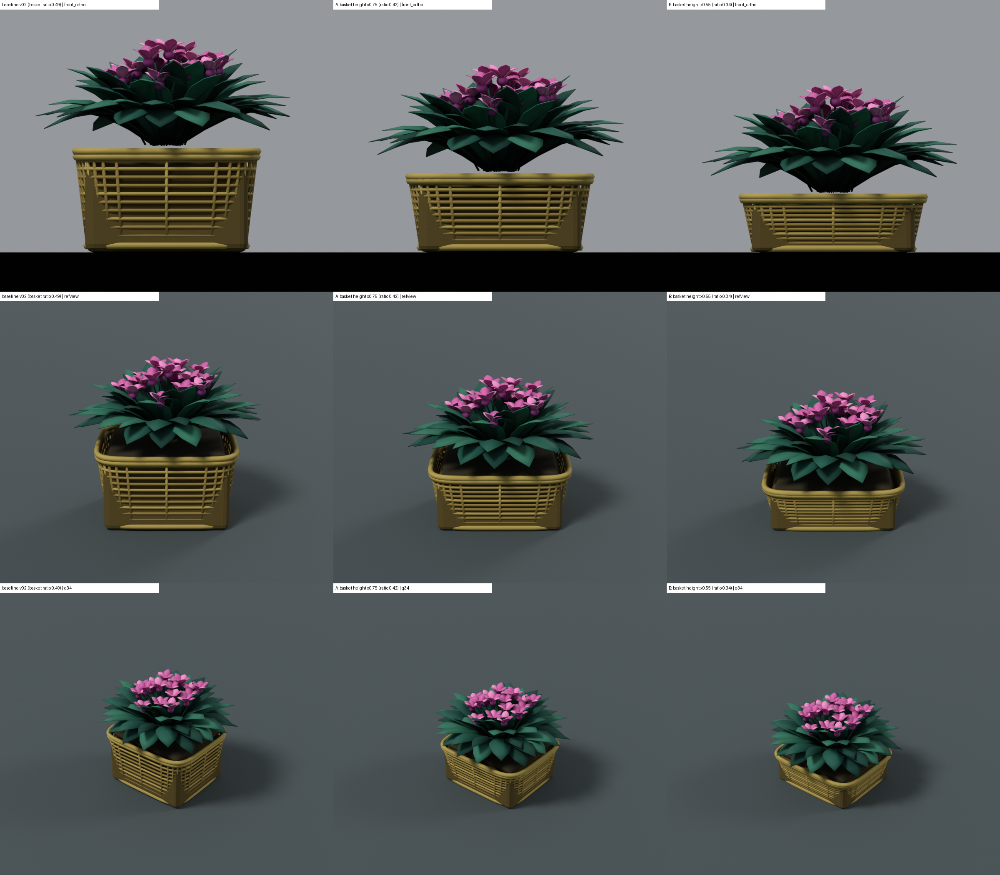
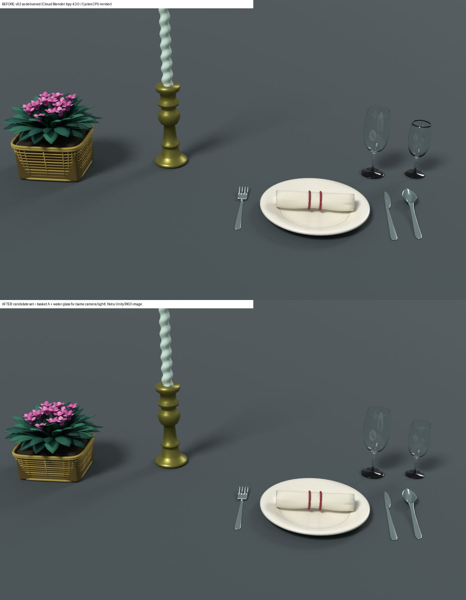
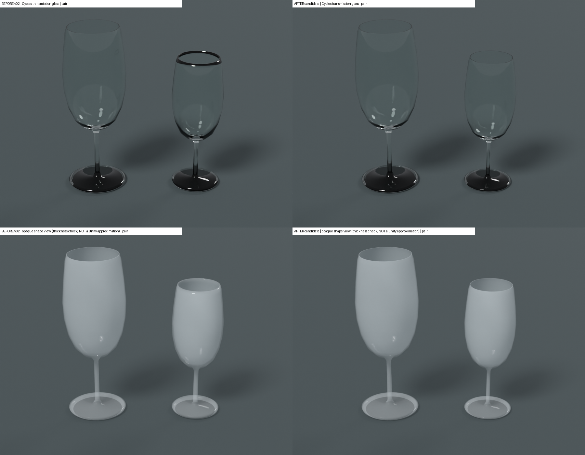
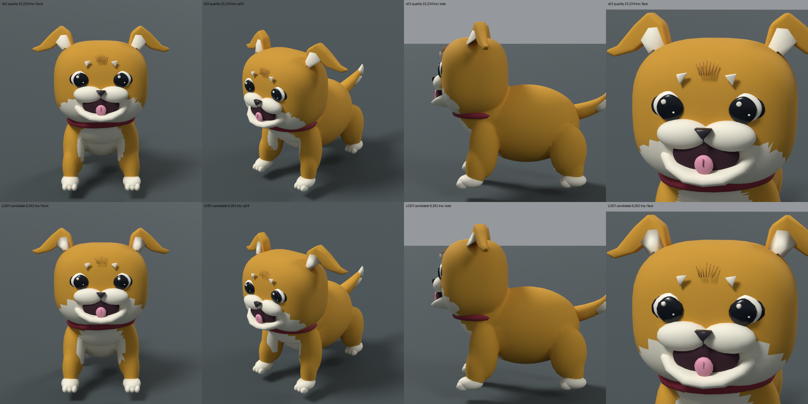
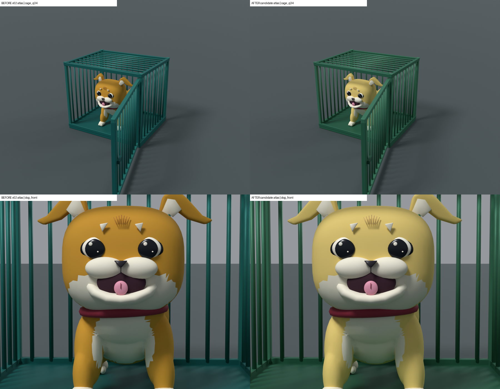

COORD07 小物候補と検証
ブランチ claude/coord07-props-20261003 / 2026-10-02〜03 JST / 候補は本体採用ではない。Unity import・VR/Quest・ユーザー承認は未検証。原作の参考画像は掲載せず、ファイル名と観測だけを記載。
推奨と判断が必要な点
| 候補 | 推奨 | 理由・保留理由 |
|---|---|---|
| 花籠の高さ A（×0.75） | 推奨 | 籠の高さ比 0.49→0.42。参考（DU_ep10-4.png 約0.35、Drive IMG_3827 約0.24）に近づき、横桟も読める |
| 花籠の高さ B（×0.55） | 代替 | 比 0.34 で DU_ep10-4 に一致。横桟が密に見える。A/B はユーザー判断 |
| 水グラス修正 | 推奨 | v02 ワイングラスの修正が水グラスに未反映だったのを反映。縁の黒い輪が消える。外形・寸法・UV 不変 |
| 犬 LOD1（9,292 tris） | 任意 LOD として推奨 | 品質版との差 p95 0.51 mm。LODGroup 距離は未設定 |
| 犬毛色・檻の色アトラス | ユーザー判断待ち | 参考 IMG_3805 の淡い黄色・緑に近づく。画面撮影の色なので最終は目視で |
花籠：baseline / A / B（形状のみ一要因）

卓上一式：v02 と候補（花籠 A＋水グラス修正）

前回候補（claude/props-v02-review-20261002、再検証のみ）



検証（6 件）
FBX 軸・単位一致、回転0・スケール1、z=0 接地、三角形数、UV 2 系統・LightmapUV 重なり 0、非多様体 0、面の反転 0、テクスチャ解決。詳細は qa/fbx_verify_all_candidates.json。
未検証・残件
- RI03 保存シーン同条件比較 14 枚：0/14 未撮影
- Unity import、透明シェーダー、LODGroup、VR/Quest 実機、ユーザーの見た目承認
- Drive 未取得分との照合、陰影診断 D1〜D4（shading_plan_COORD07.txt）